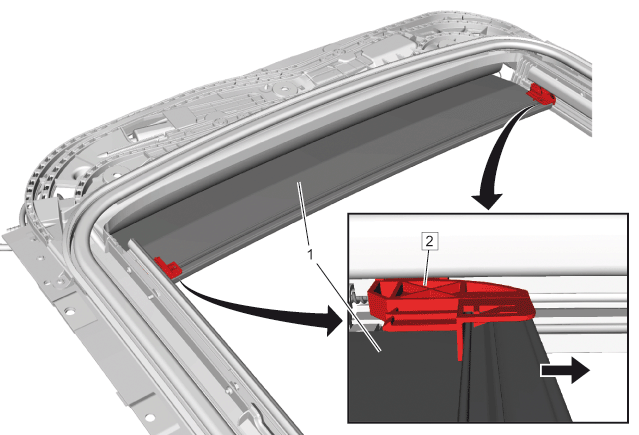
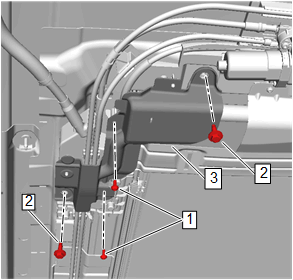
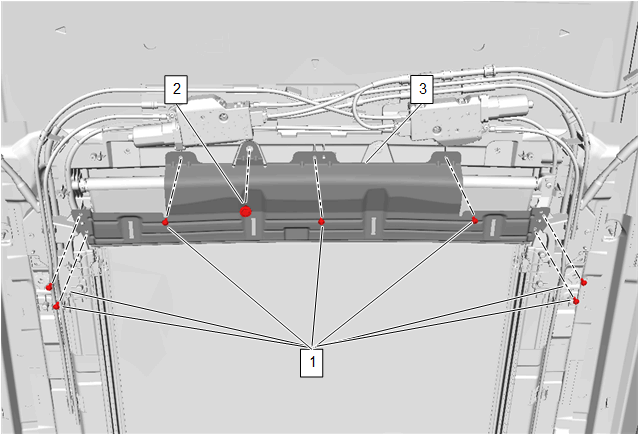
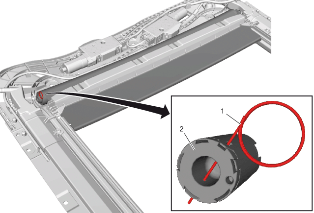
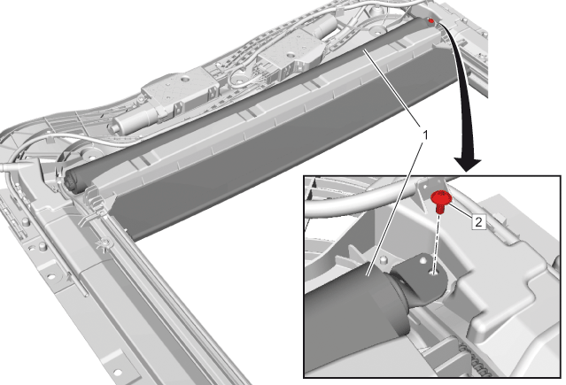
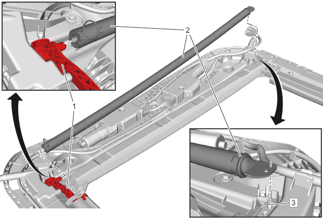

天窗遮阳板的更换
拆卸程序
- 1.车顶内衬装饰板 » 拆下–车顶内衬装饰板的更换
- 2.天窗 » 拆下–天窗的更换
- 3.车顶固定车窗 » 拆下–车顶固定车窗的更换
-

4.使用合适的工具松开两个天窗遮阳板固定件 (2)。
-
5.从天窗遮阳板固定件上滑出天窗遮阳板 (1)。
-

6.天窗壳体螺钉（1）@ 部分天窗壳体（3）» 松开 [2x]
- 7.天窗壳体螺栓（2）@ 部分天窗壳体（3）» 松开 [2x]
- 8.部分天窗壳体（3）»拆下
-

9.天窗壳体螺钉（1）@天窗壳体支架（3）» 松开 [7x]
- 10.天窗壳体螺栓（2）@天窗壳体支架（3）» 松开
- 11.天窗壳体支架（3）» 拆下
-

12.使用提供的锁定夹板 (1) 或直径为 1 mm 的合适铁丝将天窗遮阳板 (2) 锁定在图示位置。
- 13.滑动天窗遮阳板，使其穿过天窗遮阳板框架。
-

14.天窗遮阳板螺栓 (2) » 拆下
-

15.天窗遮阳板 (2) @ 导向装置 (3) »断开
- 16.天窗遮阳板(2) @ 天窗遮阳板支架 (1) » 拆下
安装程序
-
1.天窗遮阳板 (2) @ 天窗遮阳板支架 (1) » 安装
- 2.天窗遮阳板(2) @导向装置 (3) »固定
-
3.天窗遮阳板 (1) @天窗壳体»固定
-
4.天窗遮阳板螺栓 (2) »安装并紧固2.5 N•m (22 lb in)
-
5.锁定夹板 (1) @ 天窗遮阳板 (2) » 拆下
-
6.天窗壳体支架（3）»安装
- 7.天窗壳体螺钉（1）»安装并紧固 [7x]4 N•m (35 lb in)
- 8.天窗壳体螺栓（2）»安装并紧固9 N•m (80 lb in)
-
9.部分天窗壳体（3）»安装
- 10.天窗壳体螺钉（1）»安装并紧固 [2x]4 N•m (35 lb in)
- 11.天窗壳体螺栓（2）»安装并紧固 [2x]9 N•m (80 lb in)
-
- 13.穿过框架，将天窗遮阳板 (1) 滑入天窗遮阳板固定件 (2) 中。
- 14.天窗»安装 –天窗的更换
- 15.车顶固定车窗»安装 –车顶固定车窗的更换
- 16.车顶内衬装饰板»安装 –车顶内衬装饰板的更换